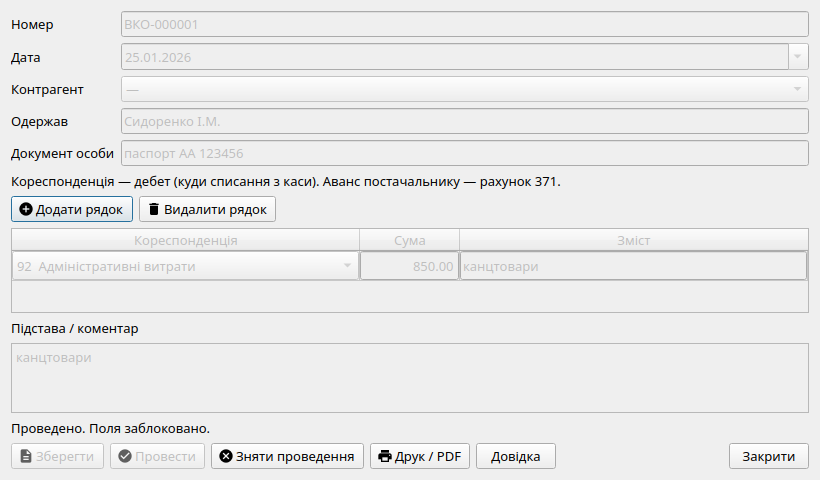

Касові операції, ПКО, ВКО та касова книга
Облік готівкових коштів у системі «Фінік» ведеться на субрахунку 301 («Готівка в національній валюті») у суворій відповідності до Положення про ведення касових операцій у національній валюті в Україні (Постанова Правління НБУ № 148).
Прибутковий касовий ордер (ПКО, типова форма КО-1)
Документ «Прибутковий касовий ордер» призначений для оприбуткування готівки в касу підприємства:
- Типові операції: надходження виручки від покупця (кореспонденція 361 або аванс 681), зняття готівки з поточного рахунку в банку (311), повернення невикористаних підзвітних сум.
- Договір: поле шапки підставляє субконто договору на рахунки розрахунків (361, 631, 371, 681), якщо воно обов’язкове в плані рахунків.
- Бухгалтерська проводка: Дт 301 Кт [Рахунок кореспонденції].
- Друкована форма: формується офіційна типова форма КО-1 (альбомна орієнтація, A4), що містить сам ордер для архіву каси та відривну квитанцію до ПКО з круглою печаткою і підписами головного бухгалтера та касира для видачі платнику.

Форма касового документа: рахунок каси 301, рахунок кореспонденції, сума в копійках, ПІБ платника/одержувача та підстава платежу.
Видатковий касовий ордер (ВКО, типова форма КО-2)
Документ «Видатковий касовий ордер» використовується для документального оформлення видачі готівки з каси:
- Типові операції: виплата заробітної плати працівникам за відомістю (субрахунок 661), оплата товарів чи послуг постачальнику (631 або виданий аванс 371), здавання торговельної виручки в банк для зарахування на рахунок 311.
- Бухгалтерська проводка: Дт [Рахунок кореспонденції] Кт 301.
- Реквізити одержувача: у формі вказуються ПІБ особи, яка фактично отримує гроші, підстава видачі, а також паспортні дані (або реквізити іншого документа, що посвідчує особу: серія, номер, орган і дата видачі).
- Друкована форма: формується типова форма КО-2 (книжкова орієнтація, A4) з підписами керівника підприємства, головного бухгалтера, касира та особистим підписом одержувача про отримання суми прописом.
Журнал касових ордерів (КО-3) та Касова книга (КО-4)
Усі оформлені та проведені прибуткові й видаткові касові ордери автоматично реєструються в системі:
-
Журнал реєстрації (типова форма КО-3): щомісячний реєстр виписаних ПКО та ВКО із наскрізною хронологічною нумерацією та сумами.
-
Касова книга (типова форма КО-4): формується в окремому однойменному розділі навігації лівої панелі. Вона містить аркуші касової книги за кожен робочий день, коли відбувався рух готівки:
- Залишок готівки в касі на початок дня;
- Перелік номерів ПКО із зазначенням кореспондуючих рахунків та оприбуткованих сум;
- Перелік номерів ВКО з сумами виданої готівки;
- Підсумковий оборот за день за дебетом і кредитом;
- Залишок готівки в касі на кінець дня.
Контроль цілісності каси: залишок у Касовій книзі (КО-4) за будь-який період обов'язково повинен до копійки сходитися із сальдо субрахунку 301 в Оборотно-сальдовій відомості та на Картці рахунку 301.